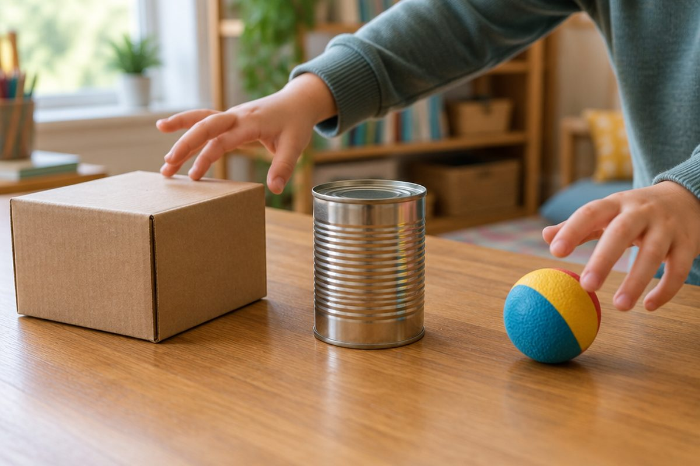

전체 단원 › 1학년 1학기 › 수학 › 여러 가지 모양
상자, 공, 세모, 네모! 어떤 모양일까?

상자, 공, 캔. 우리 집 물건은 어떤 모양일까요? 손으로 만져 보며 모양을 찾아봐요.
상자 모양, 둥근기둥 모양, 공 모양
상자 모양은 평평한 부분만 있어요.
둥근기둥 모양은 평평한 부분과 둥근 부분이 있어요.
공 모양은 모든 부분이 둥글어요.
휴지 상자· 주사위 → 상자 모양 / 캔· 두루마리 휴지 → 둥근기둥 모양 / 공· 귤 → 공 모양
쌓아 보고 굴려 봐요
상자 모양은 잘 쌓이고 굴러가지 않아요.
둥근기둥 모양은 세우면 쌓을 수 있고, 눕히면 굴러가요.
공 모양은 어느 쪽으로도 잘 굴러가서 쌓기 어려워요.
블록 탑을 쌓을 때는 상자 모양이 가장 좋아요.
□ △ ○ 모양
물건을 종이에 대고 본뜨면 평평한 모양이 나와요.
네모(□), 세모(△), 동그라미(○) 모양이에요.
□는 사각형, △는 삼각형, ○는 원이라고 불러요.
상자 바닥을 본뜨면 □, 세모 모양 치즈 조각 바닥을 본뜨면 △, 캔 바닥을 본뜨면 ○
이렇게 풀어요: 변과 꼭짓점 세기
곧은 선을 '변'이라고 해요.
두 변이 만나는 뾰족한 점을 '꼭짓점'이라고 해요.
하나씩 표시하며 세면 빠뜨리지 않아요.
① 삼각형의 곧은 선에 표시 → 3개 ② 뾰족한 점에 ● 표시 → 3개 ③ 삼각형: 변 3개, 꼭짓점 3개 (사각형은 변 4개, 꼭짓점 4개 / 원은 변과 꼭짓점이 없어요)
핵심 낱말
- 상자 모양
- 평평한 부분만 있어 잘 쌓이는 모양
- 둥근기둥 모양
- 평평한 부분과 둥근 부분이 있는 모양
- 공 모양
- 모든 부분이 둥글어 잘 굴러가는 모양
- 변
- 도형을 이루는 곧은 선
- 꼭짓점
- 두 변이 만나는 뾰족한 점
한 줄 정리
- 상자 모양은 잘 쌓이고, 공 모양은 잘 굴러가요.
- 둥근기둥 모양은 세우면 쌓이고 눕히면 굴러가요.
- 삼각형은 변·꼭짓점 3개, 사각형은 4개, 원은 없어요.
학교 교육과정 연결
- [2수03-01] 교실 및 생활 주변에서 여러 가지 물건을 관찰하여 직육면체, 원기둥, 구의 모양을 찾고, 이를 이용하여 여러 가지 모양을 만들 수 있다.
- [2수03-03] 교실 및 생활 주변에서 여러 가지 물건을 관찰하여 삼각형, 사각형, 원의 모양을 찾고, 이를 이용하여 여러 가지 모양을 만들 수 있다.
- [2수03-05] 삼각형, 사각형에서 각각의 공통점을 찾아 말할 수 있다.